CSS Flexbox Layout
Flexbox is a layout mode that provides a more efficient way to layout, align, and distribute space among items in a container, even when their size is unknown and/or dynamic.
Flexbox is a one-dimensional layout method for laying out items in rows or columns.
Conecpt of FLexbox Display from w3schools: CSS3 Flexbox
All images were taken from this source CSS Tricks: A Guide To Flexbox
Here is the layout of the Flexbox Model
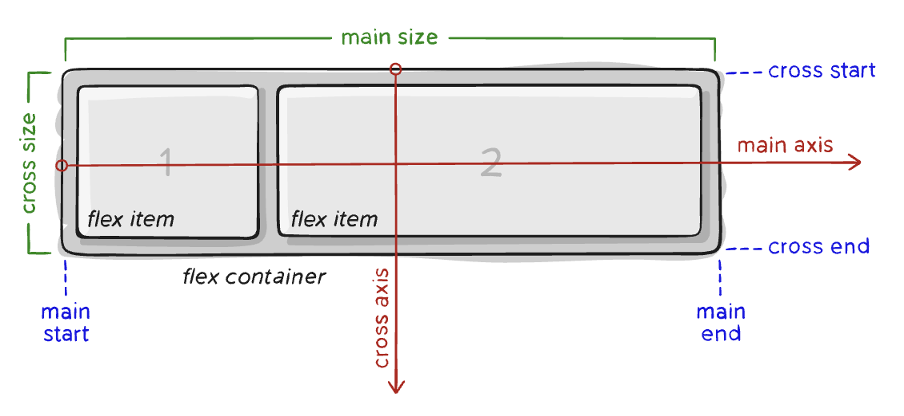It's important to note that the main-axis and cross-axis depends on the flex-direction property. If flex-direction is column, the main-axis would be vertical and the cross-axis would be horizontal
Next are the properties for the Flex Container (parent) and Flex Items (children)
Flex Container Properties
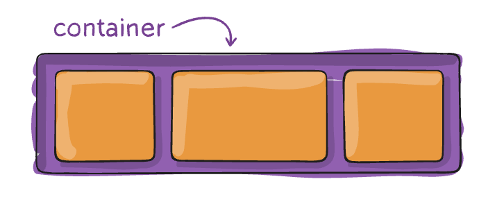flex-direction
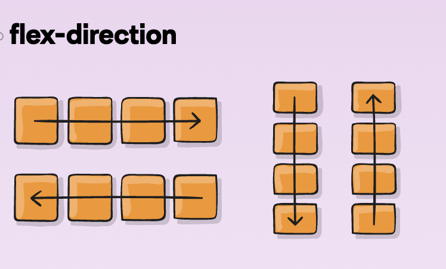
Flex-direction property specifies the direction of the flexible items inside the flex container
flex-wrap
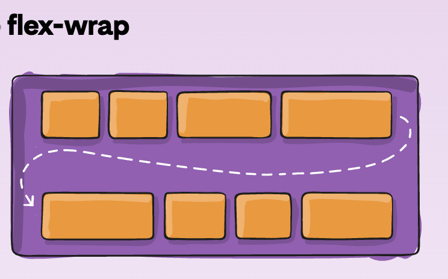
Flex-wrap property specifies whether the flex items should wrap or not, if there is not enough room for them on one line
flex-flow
Flex-flow property is a shorthand property for setting both the flex-direction and flex-wrap properties. It uses this format -- flex-flow: flex-direction flex-wrap;
justify-content
basically aligning items horizontally
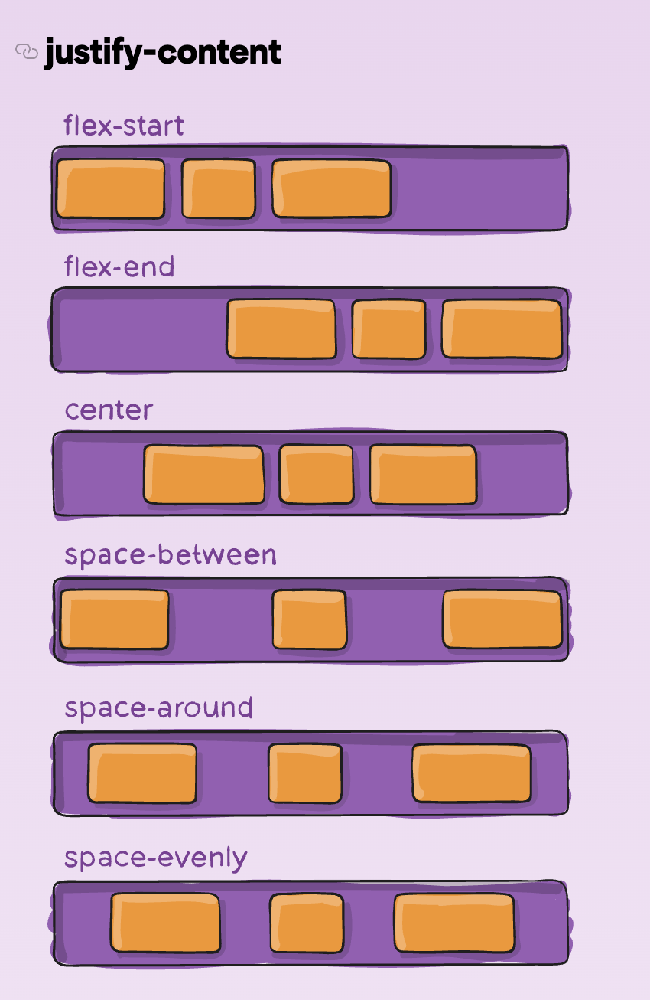Justify-content property is used to align the flex items when they do not use all available space on the main-axis. Either horizontally or vertically based on the flex-direction property.
align-item
basically aligning items vertically
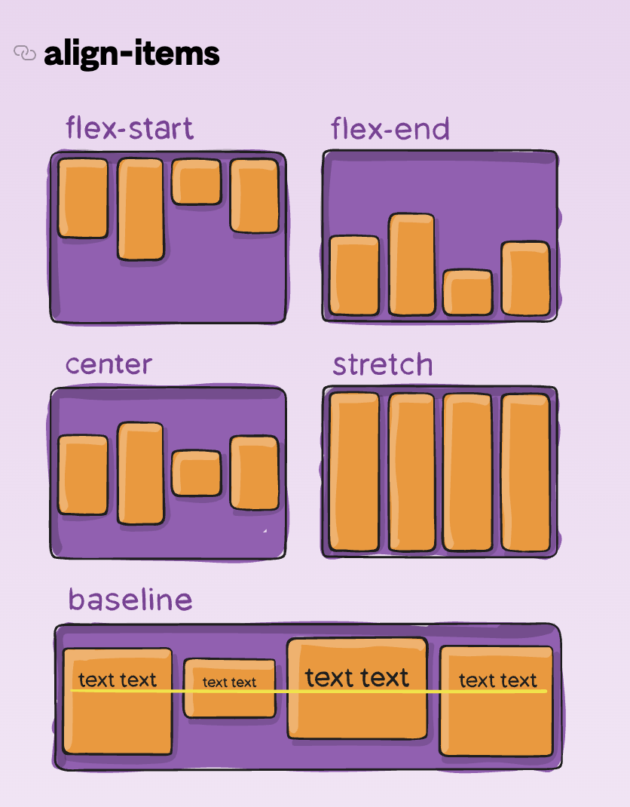Align-items property is used to align the flex items when they do not use all available space on the cross-axis. Think of it as the justify-content version for the cross-axis (perpindicular to the main-axis).
align-content
basically aligning LINES of items vertically
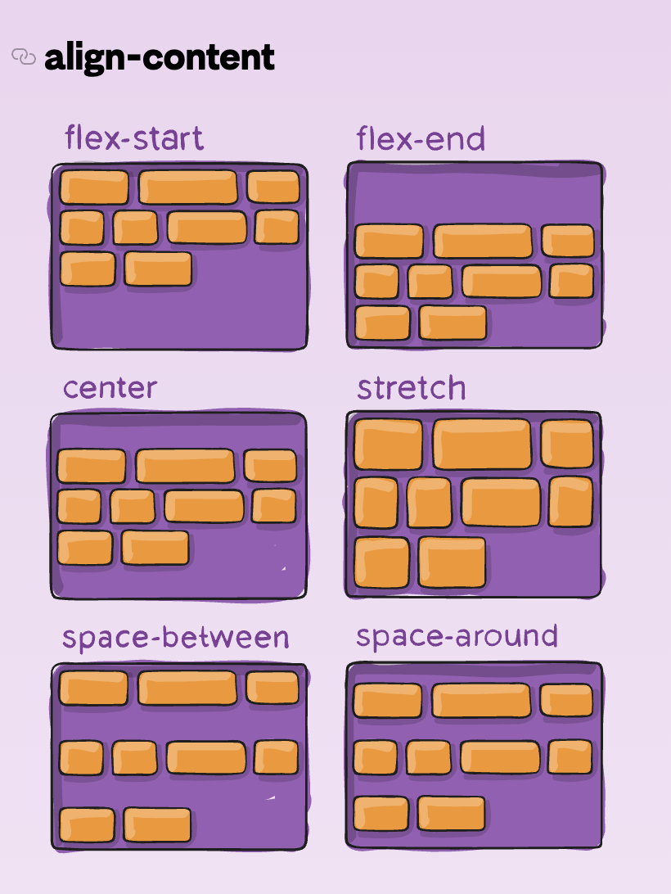Align-content property is used to align the flex lines when there is extra space in the cross-axis. Either vertically or horizontally based on the flex-direction property. Similar to how justify-content aligns individual items within the main-axis
Note: This property only takes effect on multi-line flexible containers, where flex-wrap is set to either wrap or wrap-reverse). A single-line flexible container (i.e. where flex-wrap is set to its default value, no-wrap) will not reflect align-content.
gap, row-gap, column-gap
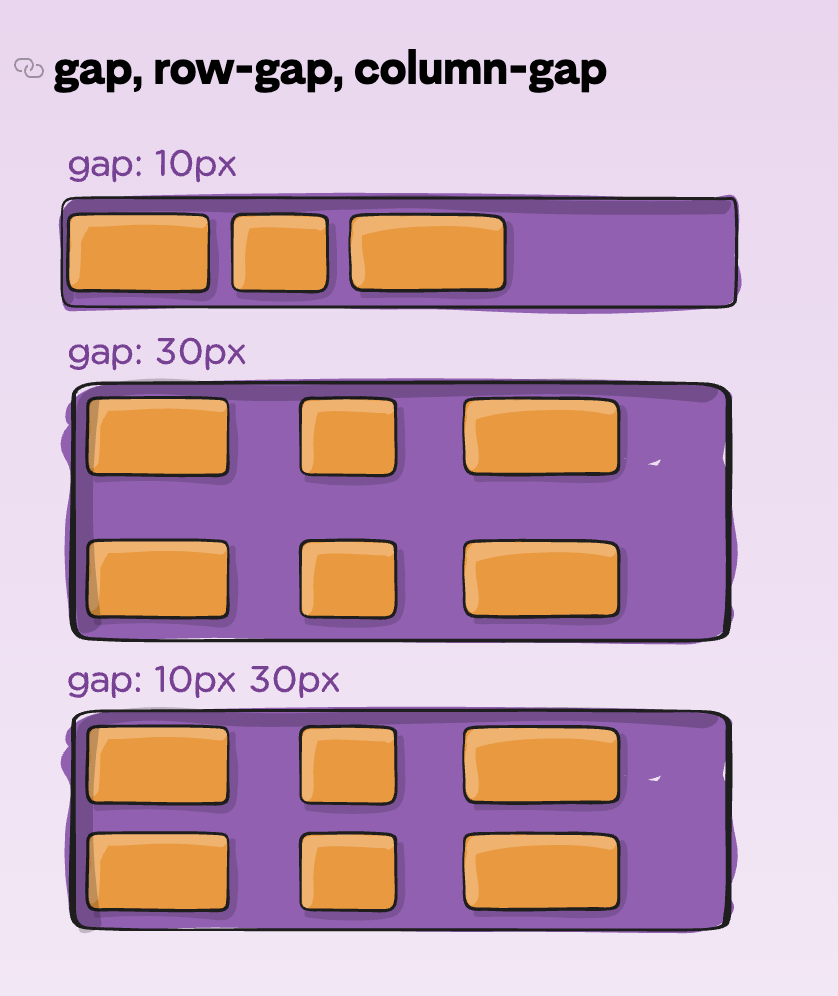
Gap property is used to create space between the flex items. It follows this format:
gap: row-gap column-gap; where row-gap is the space between rows and column-gap is the space between columns
Note: the gap property explicitly controls the space between flex items. It applies that spacing only between items not on the outer edges
Flex Item Properties
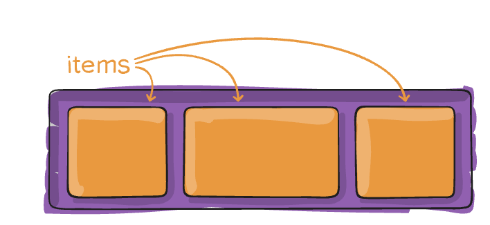order
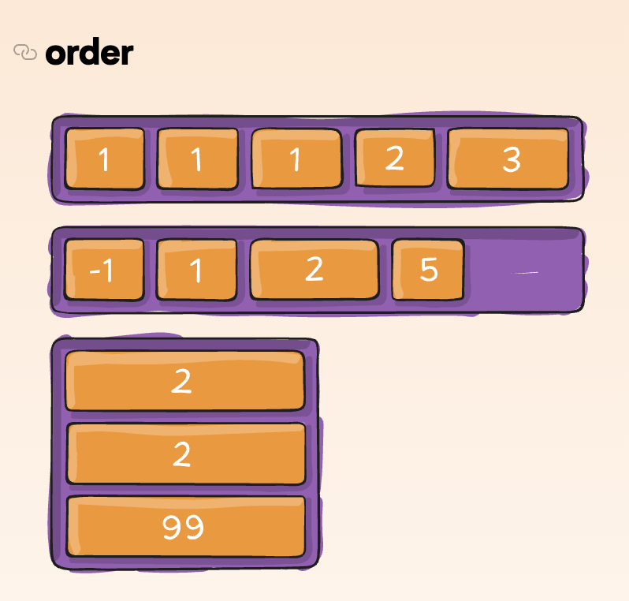
Order property is used to define the order of the flex items. It follows this format:
order: number; where number is the order of the item. The default value is 0
flex-grow
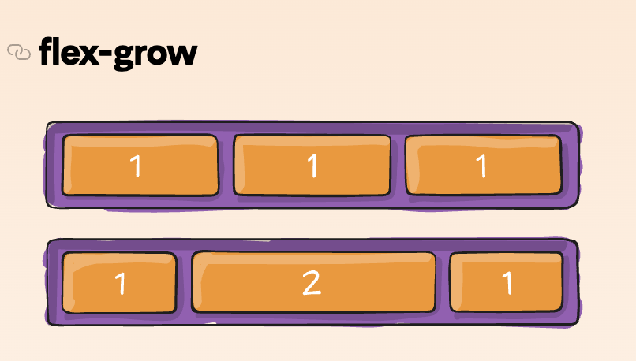
Flex-grow property is used to specify how much the item will grow relative to the rest of the flexible items inside the same container. It follows this format:
flex-grow: number; where number is the ratio of the item's growth compared to the other items. The default value is 0
flex-shrink
Flex-shrink property is used to specify how much the item will shrink relative to the rest of the flexible items inside the same container. It follows this format:
flex-shrink: number; where number is the ratio of the item's shrinkage compared to the other items. The default value is 1
flex-basis
Flex-basis property is used to specify the initial size of the item before any available space is distributed. It follows this format:
flex-basis: length | auto; where length is the size of the item and auto is the default value
flex
Flex property is a shorthand property for the flex-grow, flex-shrink, and flex-basis properties. It follows this format:
flex: flex-grow flex-shrink flex-basis; where flex-grow, flex-shrink, and flex-basis are the values for the respective properties
align-self
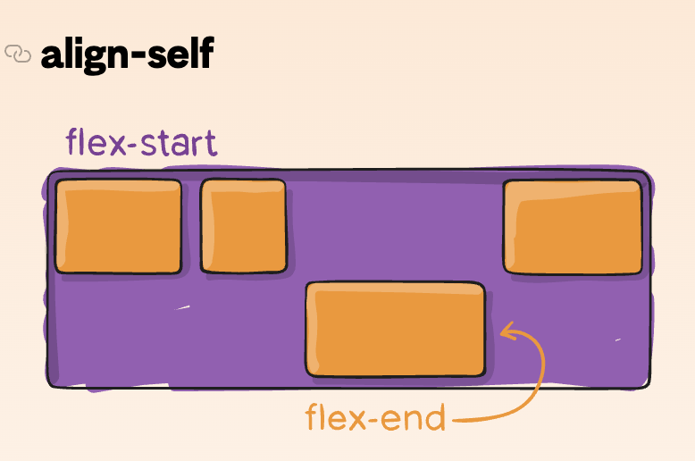
Align-self property is used to override the align-items property for individual flex items. It follows this format:
align-self: auto | flex-start | flex-end | center | baseline | stretch; where auto is the default value
Flexbox Poster